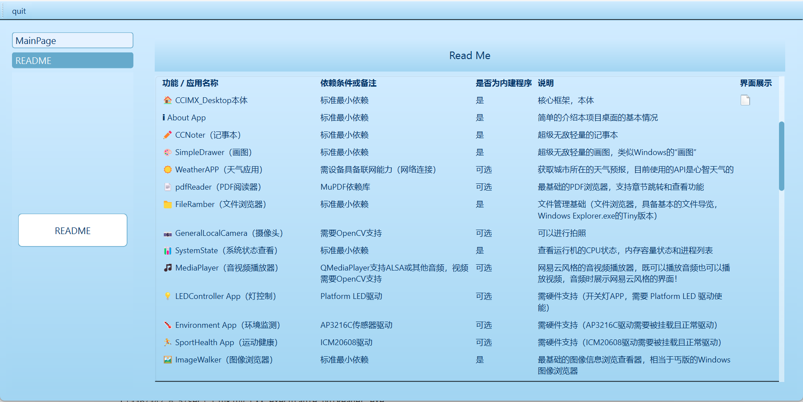
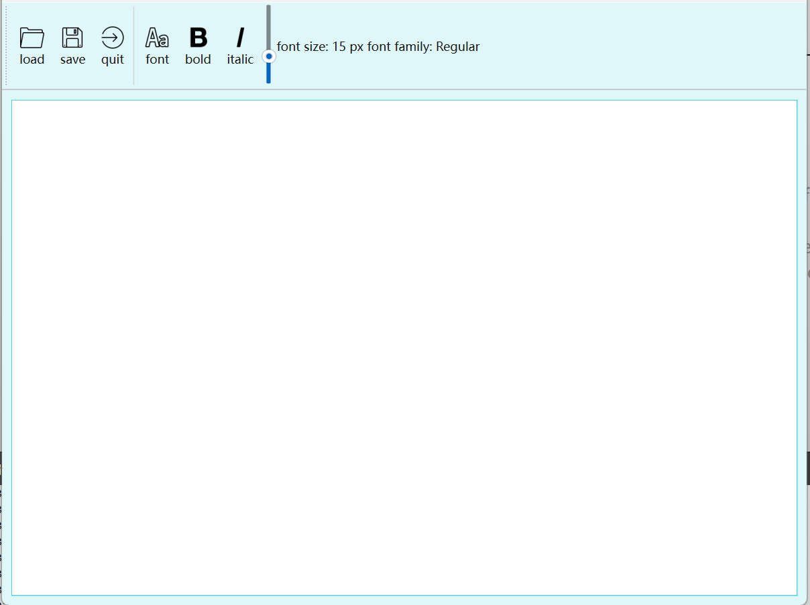
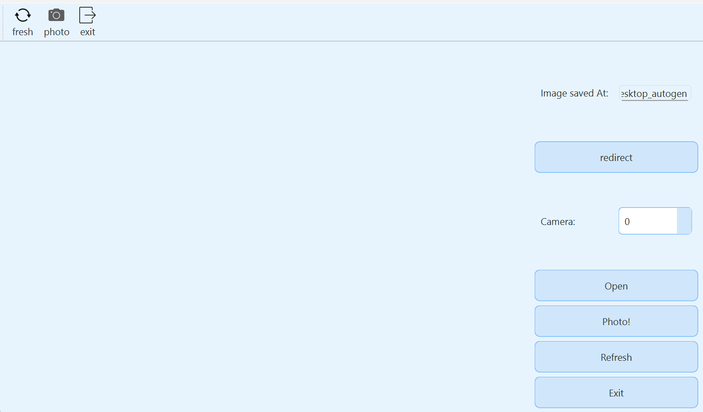
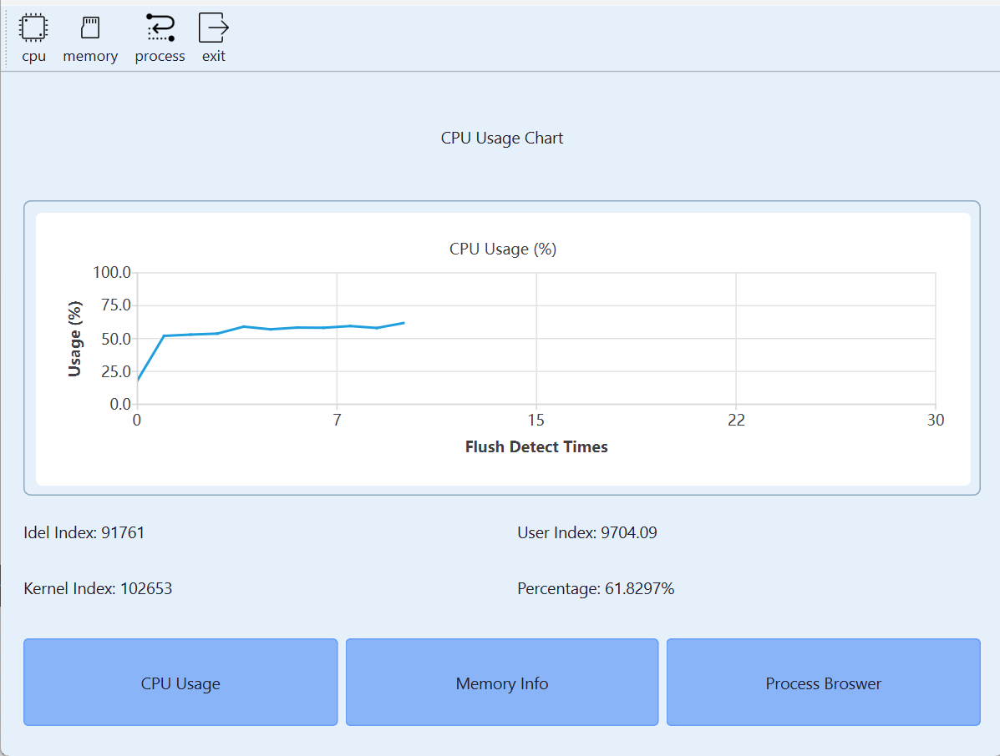
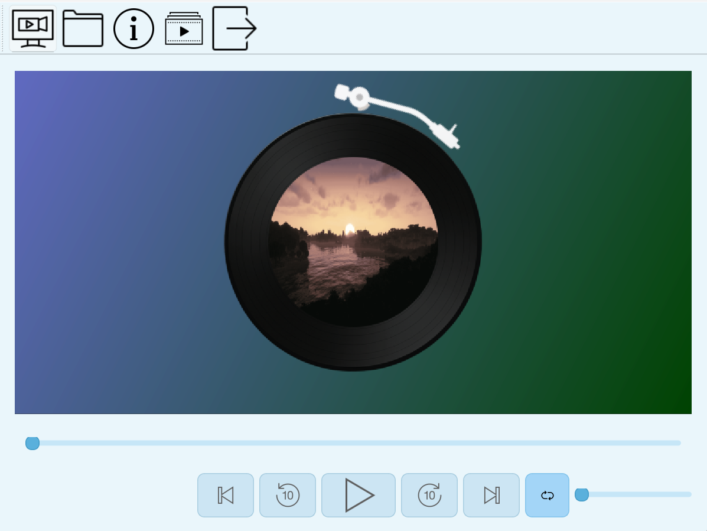
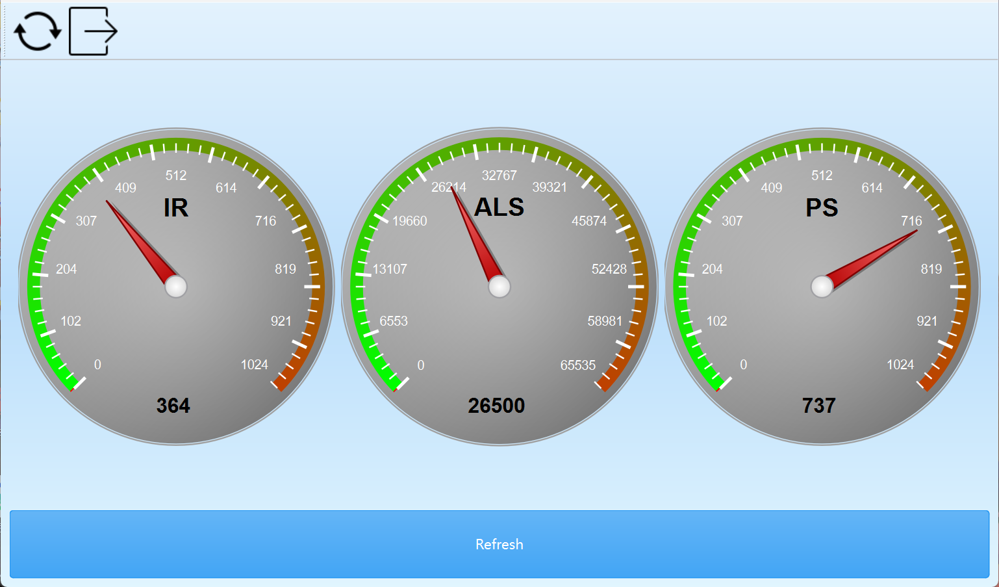

|
CCIMXDesktop
|

|
|
CCIMXDesktop
|
|
🔌 您好！这是一个可在多种嵌入式设备中使用的简单桌面和实用程序集合！本项目目前已经可以使用完全的C++17进行编译！
**CCIMXDesktop**是一个极简，轻量和高性能，基于Qt6.8.3的桌面环境框架，专门对以 NXP i.MX6ULL 平台为例的嵌入式系统优化，这里提供一系列常见的Qt内置工具封装，设备管理继承和内置的辅助应用程序，所有这些都在一个统一的用户界面中呈现。让您轻松愉快的可视化的使用带有LCD的嵌入式设备！
1）启动加载时画面（截图版本：Release 1.5.0）

2）主界面：HOME界面（截图版本：Release1.10.0）

2）BuiltinAPP展示界面

3）ExternAPP第三方可选构建配置

4）APP设置桌面界面

构建这个项目要求您已经完成对Qt6的移植（基础的必要移植包括TSLib做交互，QtCore QtWidget QtGui三件套，QtNetwork和最小至少支持ALSA音频播放的QtMultiMedia组件的支持），请您核查自己的构建是否足够支持构建本桌面和第三方应用程序！
提示：全量构建需要大约近10分钟（16线程），您可以根据需求动态调整，详细请参考构建文档
🛠️ 如何构建本项目？（支持 X86 gcc、ARM-linux-gnueabihf-gcc 和 Windows GCC）
现在，CCIMXDesktop支持的一键构建包括： （注：标准最小依赖为：TSLib做交互📝，QtCore🔧 QtWidget🖼️ QtGui🎨 QtNetwork🌐四件套的基础支持）
🗃️ 丝滑滑动卡片系统 ✨
目前已注册的内建卡片类型 📦:
| 功能 / 应用名称 | 依赖条件或备注 | 是否为内建程序 | 说明 | 界面展示 |
|---|---|---|---|---|
| 🏠 CCIMX_Desktop本体 | 标准最小依赖 | 是 | 核心框架，本体 | |
| ℹ About App | 标准最小依赖 | 是 | 简单的介绍本项目桌面的基本情况 |  |
| ✏️ CCNoter（记事本） | 标准最小依赖 | 是 | 超级无敌轻量的记事本 |  |
| 📅CCCalendar（日历APP） | 标准最小依赖 | 是 | 超级无敌轻量的日历APP |  |
| 🎨 SimpleDrawer（画图） | 标准最小依赖 | 是 | 超级无敌轻量的画图，类似Windows的“画图” |  |
| ☀️ WeatherAPP（天气应用） | 需设备具备联网能力（网络连接） | 可选 | 获取城市所在的天气预报，目前使用的API是心智天气的 |  |
| 📄 pdfReader（PDF阅读器） | MuPDF依赖库 | 可选 | 最基础的PDF浏览器，支持章节跳转和查看功能 |  |
| 📁 FileRamber（文件浏览器） | 标准最小依赖 | 是 | 文件管理基础（文件浏览器，具备基本的文件导览，Windows Explorer.exe的Tiny版本） |  |
| 📷 GeneralLocalCamera（摄像头） | 需要OpenCV支持 | 可选 | 可以进行拍照 |  |
| 📊 SystemState（系统状态查看） | 标准最小依赖 | 是 | 查看运行机的CPU状态，内存容量状态和进程列表 |  |
| 🎵 MediaPlayer（音视频播放器） | QMediaPlayer支持ALSA或其他音频，视频需要OpenCV支持 | 可选 | 网易云风格的音视频播放器，既可以播放音频也可以播放视频，音频时展示网易云风格的界面！ |  |
| 💡 LEDController App（灯控制） | Platform LED驱动 | 可选 | 需硬件支持（开关灯APP，需要 Platform LED 驱动使能） |  |
| 🌡️ Environment App（环境监测） | AP3216C传感器驱动 | 可选 | 需硬件支持（AP3216C驱动需要被挂载且正常驱动） |  |
| 🏃 SportHealth App（运动健康） | ICM20608驱动 | 可选 | 需硬件支持（ICM20608驱动需要被挂载且正常驱动） |  |
| 🖼️ ImageWalker（图像浏览器） | 标准最小依赖 | 是 | 最基础的图像信息浏览查看器，相当于丐版的Windows图像浏览器 |  |
| ✏️ Markdown阅读器 | 标准最小依赖 | 是 | 轻量级Markdown编辑预览（最基础的Markdown编辑 + 预览功能，支持草稿 / 加载保存Markdown与基础快捷功能） |  |
| 🛜 CCNetHelper（网络工具） | 需要网卡具备网络连接能力（网卡驱动正常） | 可选 | 支持网卡信息查看，IP端口扫描和基本测试IP打通能力 |  |
| 🦖 Dinasour Game（小游戏） | 标准最小依赖 | 可选 | 是的，就是那个Google Dinasour Game，用Qt6 Widgets实现的版本 :) |  |
| 🧮 Calculator（计算器） | 标准最小依赖 | 是 | 基础工具（标准计算器） |  |
| 🤖 ImageProcessor（图像处理和推理） | OpenCV，推理库（如有） | 可选 | 需OpenCV支持及推理支持 |  |
| ⚙ Settings（设置界面） | 标准最小依赖 | 是 | 桌面壁纸、亮度和桌面应用风格设置 |  |
| 🚀 Dynamic Application Launcher（动态应用启动器） | 标准最小依赖 | 是 | 第三方应用运行和管理 |  |
如果您对项目的制作流程和开发文档感兴趣，请参考Documentations文件夹。有关构建流程及定制，请查阅构建手册：
🛠️ 如何构建本项目？（支持 X86 gcc、ARM-linux-gnueabihf-gcc 和 Windows GCC）
文档已通过 GitHub Actions 自动部署，访问：CCIMXDesktop: Main Page
本项目基于 MIT 许可证，欢迎随意移植、修改和使用！